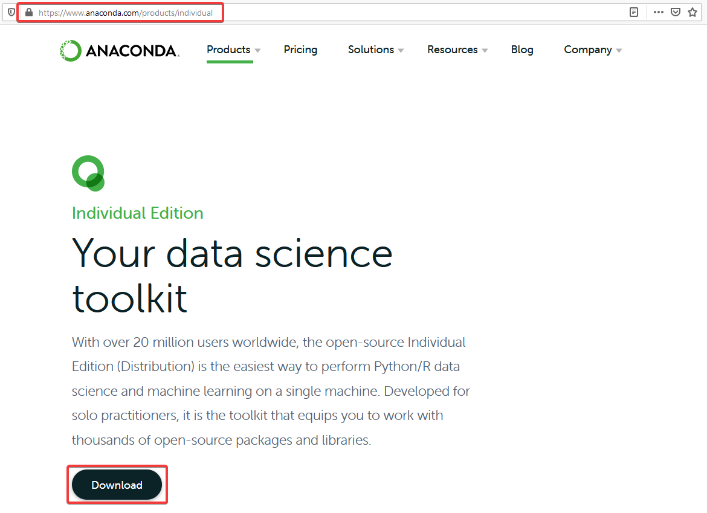
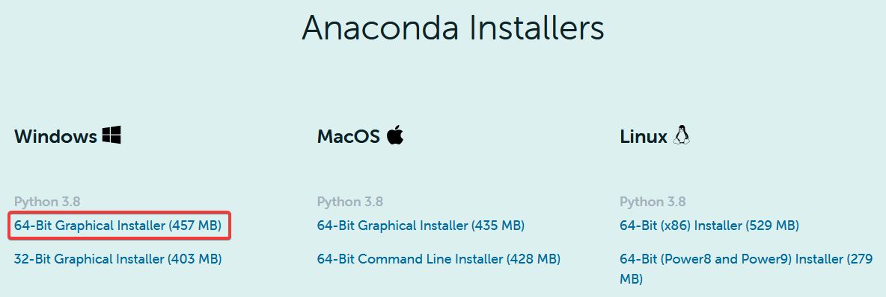
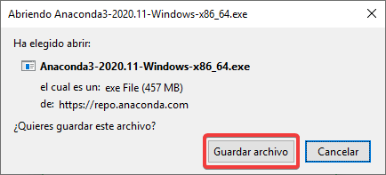
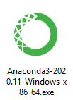
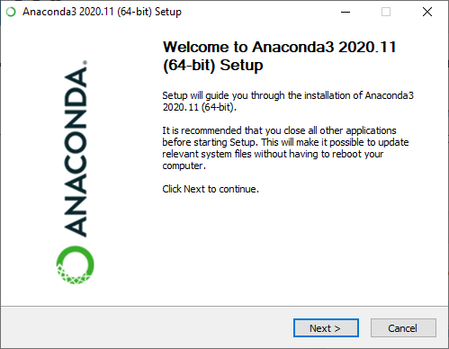

Installing Anaconda on Windows¶
Anaconda is a frontend enviroment for Python language. It is necesary for setting up your workspace. Installation packages are available for Windows, Mac and Linux. We are going to go through the Windows installation.
Using a Web browser, navigate to the Anaconda’s Individual Edition page. Then, go to the download section.
Click on your preferred installer. In our case we are choosing the 64-Bit Windows installer since we are using a 64-Bit computer.
Save the .EXE file
Go to your download folder and open the Anaconda .EXE file
Go through the installation process as an usual Windows installation.
